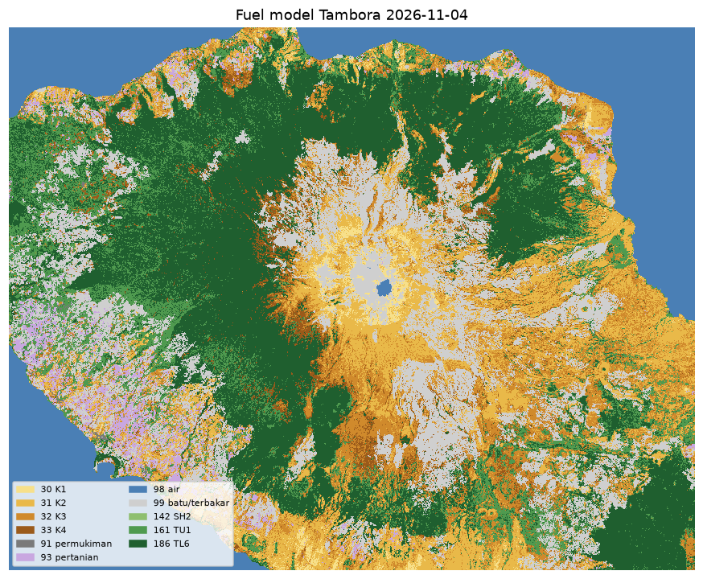

Peta bahan bakar terbaru

K1–K4 = savana (fuel 30–33). Bekas terbakar musim ini menjadi fuel 99 (tidak terbakar lagi dalam simulasi).
Bahan bakar savana K1–K4
Sisa K1–K4 per resort
Mulai simulasi
Klik titik api di peta, isi tanggal dan jam kejadian. Cuaca per jam (.wxs) dibuat otomatis untuk titik dan waktu itu.
Bekas terbakar baru per jendela citra 21 hari
1Titik api
2Waktu kejadian dan cuaca
Tabel cuaca per jam
3Model
FARSITE: kosongkan agar angin mengikuti cuaca per jam. Isi untuk memaksa angin tetap.
Hasil simulasi
Dari mana api datang dan pukul berapa api mulai
Pemodelan terbalik (inverse modelling): untuk tiap kejadian kebakaran musim ini di kawasan TN dan sampai 1,5 km di luar batasnya, titik panas satelit dan areal terbakar dicocokkan dengan simulasi FARSITE (fmd20, fms, landscape, angin per jam ERA5) yang dijalankan mundur dan maju. Hasilnya titik asal api, perkiraan jam api mulai, arah datang api, dan faktor koreksi laju api untuk kalibrasi fuel model. Hasil ini informasi, bukan simulasi baru, dan dihitung ulang otomatis setiap hari.
Memuat hasil…
Peta titik asal dan arah rambat
Panah pada titik asal menunjuk arah api merambat (dari titik asal ke pusat areal terbakar). Klik titik asal untuk melihat zona peluang 50% dan 90%, garis waktu rambat per jam, dan titik panas kejadian itu. Klik bidang areal terbakar untuk melihat waktu terbakarnya.
Jam rawan pembakaran
Tabel per jam
Arah datang api
Tabel per arah
Laju api menurut waktu
Tabel per jam
Kalibrasi fuel model dari kejadian nyata
Metode dan keterbatasan
Hasil disimpan sebagai GitHub Release (tag sim-…) dan di Google Drive folder simulasi/.
Jadwal dan status update
Landscape dicek dua kali sehari (11:00 dan 19:00 WITA) dan dihitung ulang setiap ada citra Sentinel-2 baru, biasanya tiap 2–5 hari. Bisa juga dijalankan manual dari GitHub Actions.
Luas per fuel model (seluruh AOI)
Jendela citra 21 hari
Tiap jendela membandingkan median NBR 21 hari dengan jendela sebelumnya. Petak gelap baru dihitung bekas terbakar hanya bila dekat titik panas VIIRS/MODIS (FIRMS). Jendela yang sedang berjalan dihitung ulang setiap ada citra baru.
Cara menjalankan simulasi
- Buka tab Simulasi, lalu klik peta di lokasi titik api. Nama resort dan nomor grid 1 km muncul di bawah koordinat.
- Isi tanggal dan jam mulai (WITA). Bawaannya jam sekarang. Cuaca per jam untuk titik itu langsung diambil dan dijadikan file .wxs, ditambah 3 hari sebelumnya untuk pengkondisian kadar air bahan bakar. Ringkasan angin, suhu, RH, dan hujan tampil di bawahnya.
- Pilih mode: FARSITE (angin dan cuaca berubah tiap jam) atau MTT (angin tetap; kecepatan dan arah diisi otomatis dari cuaca jam mulai dan boleh diubah).
- Pilih Crown Fire Calculation Method: Finney (1998) atau Scott/Reinhardt (2001), sama seperti di FlamMap.
- Klik Jalankan simulasi. Simulasi berjalan di GitHub Actions, biasanya 2–20 menit. Hasilnya tampil di peta dan bisa diunduh (GeoTIFF waktu tiba, perimeter shapefile, PNG).
- Buka tab Simulasi 3D (atau tombol 3D di Riwayat) untuk memutar rambatan api di atas medan 3D.
Simulasi 3D
- Putar / jeda (spasi) memutar rambatan api. Penggeser waktu di bawah medan bisa digeser maju-mundur; grafik di atasnya menunjukkan luas terbakar dan bisa diklik untuk lompat ke jam tertentu. Tombol di sebelah kiri penggeser melompat ke awal, ke jam bulat sebelumnya, ke jam bulat berikutnya, dan ke akhir. Panah kiri/kanan menggeser 10 menit (dengan Shift 1 jam).
- Jam besar di pojok kiri atas = pukul berapa (WITA) pada saat itu. Label jam di medan menandai posisi kepala api tiap jam bulat; garis putih = garis waktu (isokron) tiap 1, 2, 3, atau 6 jam.
- Panel Kondisi pukul …: luas terbakar, pertambahan luas per jam, laju api (ROS) di muka api, kemajuan kepala api dan arahnya, panjang nyala, intensitas, tipe api, dan cuaca per jam yang dipakai simulasi.
- Pilihan warna: waktu tiba, laju api, panjang nyala, intensitas, atau tipe api. Peta dasar: ketinggian, bahan bakar, atau citra satelit.
- Klik medan untuk info titik (pukul api tiba, laju, nyala, bahan bakar, lereng). Alat Ukur menghitung laju rata-rata api antara dua titik.
- Alat 3D lain: pembesaran tinggi, kontur, grid 1 km, jalur patroli, batas resort, arah dan tinggi matahari, bayangan, kamera (miring, dari atas, searah angin, dekat api), putar otomatis, tangkapan layar, layar penuh.
Asal Api (pemodelan terbalik)
- Untuk tiap kejadian kebakaran musim ini di kawasan TN dan sampai 1,5 km di luar batasnya, titik panas satelit dan areal terbakar dicocokkan dengan simulasi FARSITE yang dijalankan mundur dan maju (fmd20, fms, landscape, angin per jam ERA5). Hasilnya titik asal (zona peluang 50% dan 90%), perkiraan jam api mulai dengan selang 90%, arah datang api, tempat api masuk kawasan bila asalnya di luar TN, laju api (m/menit) per pagi, siang, sore, malam, dan faktor laju api k.
- Grafik jam rawan pembakaran menjumlahkan perkiraan jam mulai semua kejadian per jam WITA, dibandingkan dengan jam deteksi satelit pertama (yang selalu jatuh di jam lintasan satelit, sekitar 01–03 dan 12–15).
- Saring menurut bulan, mutu dugaan, letak titik asal, resort, dan luas. Semua angka, peta, dan grafik mengikuti saringan. Tabel bisa diunduh CSV, titik asal dan zona sebagai GeoJSON.
- Klik titik asal atau baris tabel: zona peluang, garis waktu rambat per jam, titik panas kejadian itu (diwarnai menurut jam deteksi), grafik kapan api mulai, titik panas yang dipakai, dan cuaca per jam. Tombol Simulasikan dari titik asal ini mengisi tab Simulasi.
- Areal terbakar memakai bidang delineasi apa adanya (tidak digabung, luas sesuai SHP). Klik sebuah bidang untuk melihat waktu terbakarnya: deteksi titik panas pertama sampai terakhir di dalam bidang itu (bila tidak ada, titik panas ≤ 400 m dari bidang). Jam mulai api tetap per kejadian dari pemodelan terbalik. Bidang bisa diunduh bersama waktunya (GeoJSON atau CSV, dengan FID rekaman SHP asli untuk digabung di ArcGIS).
- Mutu: baik = terlihat di ≥ 2 lintasan satelit dan cocok; sedang = cukup cocok atau hanya 1 lintasan; rendah = kurang cocok. Faktor k kejadian yang baik dipakai untuk saran kalibrasi ros_adjust per kelas K1–K4 (tidak diterapkan otomatis).
- Hasil diperbarui otomatis tiap pagi dan setiap ada delineasi baru. Titik asal adalah zona peluang, bukan titik pasti.
Sumber cuaca
- Tanggal lebih dari 5 hari lalu: reanalisis ERA5 / ERA5-Land (arsip Open-Meteo).
- 5 hari terakhir, hari ini, dan sampai 15 hari ke depan: model ECMWF/GFS terbaik (prakiraan Open-Meteo).
- Ini data model grid 9–25 km, bukan pengamatan stasiun. Bila punya data stasiun atau BMKG, pilih File .wxs sendiri.
Lapisan peta
- Batas TN dan batas resort: kawasan TN Tambora dan enam resort.
- Jalur patroli: jalur patroli, eksplorasi, pendakian, dan jalan lain. Klik garis untuk melihat nama dan panjangnya.
- Grid 1 km: kotak bernomor; warna menunjukkan kolom Nilai (1, 0, atau kosong) dari data aslinya.
- Lapisan bisa dinyalakan dan dimatikan dari tombol lapisan di pojok kanan atas peta.
Landscape dan bahan bakar
- Fuel savana K1–K4 = model 30–33 terkalibrasi (fmd20). Hutan TL6/TU1, batuan dan bekas terbakar 99.
- Koreksi laju api (ros_adjust) dari pemodelan terbalik, berlaku sejak 3 November 2026: K2 ×0,77, K3 ×0,69, K4 ×1,33, hutan TU1 ×3,13. Untuk FlamMap desktop, file yang sama:
kalibrasi/tambora_ros_adjust.adj. - Landscape 10 m diperbarui otomatis setiap ada citra Sentinel-2 baru. Bekas terbakar sejak 1 Juni ditandai dari penurunan NBR yang dekat titik panas FIRMS.
Tautan
- Repositori GitHub (kode, panduan Google Drive, panduan halaman simulasi)
- Pembuat .wxs lengkap untuk FlamMap desktop (pilihan model dan mode kompatibilitas tanggal)